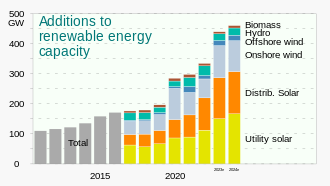

Renewable energy, green energy, or low-carbon energy is energy from renewable resources that are naturally replenished on a human timescale. Renewable resources include sunlight, wind, the movement of water, and geothermal heat.Although most renewable energy sources are sustainable, some are not. For example, some biomass sources are considered unsustainable at current rates of exploitation.Renewable energy is often used for electricity generation, heating and cooling. Renewable energy projects are typically large-scale, but they are also suited to rural and remote areas and developing countries, where energy is often crucial in human development
As part of the global effort to address climate change, most of the world's countries have committed substantially reducing their greenhouse gas emissions. In practice, this means phasing out fossil fuels and replacing them with low-emissions energy sources.At the 2023 United Nations Climate Change Conference, around three-quarters of the world's countries set a goal of tripling renewable energy capacity by 2030. The European Union aims to generate 40% of its electricity from renewables by the same year. Renewable energy is also more evenly distributed around the world than fossil fuels, which are concentrated in a limited number of countries.It also brings health benefits by reducing air pollution caused by the burning of fossil fuels. The potential worldwide savings in health care costs have been estimated at trillions of dollars annually.
India stands 4th globally in Renewable Energy Installed Capacity (including Large Hydro), 4th in Wind Power capacity & 4th in Solar Power capacity (as per REN21 Renewables 2022 Global Status Report).The country has set an enhanced target at the COP26 of 500 GW of non-fossil fuel-based energy by 2030. This has been a key pledge under the Panchamrit. This is the world's largest expansion plan in renewable energy. India’s installed non-fossil fuel capacity has increased 396% in the last 8.5 years and stands at more than 190.97 GW (including large Hydro and nuclear), about 44% of the country’s total capacity (as of Feb 2024). India saw the highest year-on-year growth in renewable energy additions of 9.83% in 2022. The installed solar energy capacity has increased by 30 times in the last 9 years and stands at 75.57 GW as of Feb 2024. India’s solar energy potential is estimated to be 748 GWp as estimated by National Institute of Solar Energy (NISE). The installed Renewable energy capacity (including large hydro) has increased by around 128% since 2014.
Our planet is yearning for a change. Climate change is a pressing issue, and the dependence on traditional energy sources is a major contributor. But there's hope! Here at GREEN INDIA , we're passionate about empowering individuals and communities to embrace a brighter future powered by clean, renewable energy. We believe that transitioning to green energy sources like solar, wind, and geothermal isn't just good for the environment, it's good for your wallet and quality of life. This website is your one-stop shop for everything green energy. We'll break down the benefits of renewable sources, from reducing air pollution and greenhouse gas emissions to creating a more stable energy grid. We'll also explore the financial incentives available to make the switch more accessible, along with success stories from individuals and communities who have already made the leap. Whether you're a homeowner considering solar panels or a business owner interested in renewable energy options, we'll provide you with the knowledge and resources to navigate the path towards a sustainable future. Join us on this journey towards a cleaner, greener world, powered by the sun, the wind, and the earth itself.